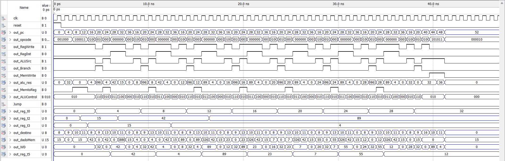

Universidade Federal do Rio Grande do Norte
DEPARTAMENTO DE ENGENHARIA ELÉTRICA — ELE0517 SISTEMAS DIGITAIS
Alunos: Gustavo Guilherme Wanderley & Matteo Peixoto
Orientador: Prof. Filipe Taveiros
Desenvolver um software em Assembly e adaptar uma arquitetura de hardware monociclo para ler, analisar e extrair extremos numéricos contidos em um array na RAM.
A memória foi populada consecutivamente com 8 elementos inteiros de 32 bits a partir do endereço base zero:
[15, 42, 4, 89, 23, 7, 55, 12]
-- Rotina de Inicialização addi $t0, $zero, 0 -- Ponteiro de endereço da RAM = 0 addi $t1, $zero, 32 -- Limite de parada (8 elementos * 4 bytes) lw $t2, 0($t0) -- MAX provisório inicial = Vetor[0] (15) lw $t3, 0($t0) -- MIN provisório inicial = Vetor[0] (15) -- Laço de Repetição Principal (Loop) addi $t0, $t0, 4 -- Avança o ponteiro para o próximo endereço beq $t0, $t1, FIM -- Se ponteiro == 32, desvia para o encerramento lw $t5, 0($t0) -- Carrega o elemento atual da RAM para $t5 max $t2, $t2, $t5 -- Nova Instrução: Atualiza o MAX se $t5 > $t2 min $t3, $t3, $t5 -- Nova Instrução: Atualiza o MIN se $t5 < $t3 j 16 -- Salto incondicional para o início do laço -- Rotina de Salvamento e Encerramento FIM: addi $s0, $zero, 32 -- Registrador base de escrita fixado em 32 sw $t2, 0($s0) -- Escreve o valor do MAX (89) na RAM[32] sw $t3, 4($s0) -- Escreve o valor do MIN (4) na RAM[36] j 52 -- Loop infinito de segurança (Trava o PC)
O programa divide-se de forma clara em três etapas fundamentais:
Funciona como a infraestrutura central do processador. O seu papel é instanciar e interconectar os barramentos dos componentes principais:
entity maxmin_final is Port ( clk : in STD_LOGIC; reset : in STD_LOGIC; out_pc : out STD_LOGIC_VECTOR(31 downto 0); out_alu_res : out STD_LOGIC_VECTOR(31 downto 0); out_opcode : out STD_LOGIC_VECTOR(5 downto 0); out_ALUControl : out STD_LOGIC_VECTOR(2 downto 0); out_WD : out STD_LOGIC_VECTOR(31 downto 0); out_MemWrite : out STD_LOGIC ); end entity;
Apenas os blocos que alteram o estado físico do hardware reagem de forma síncrona na borda de subida do clock:
Fluem de maneira contínua através dos fios lógicos, atualizando as saídas instantaneamente ao mudar as entradas:
case opcode is when "000000" => -- Tipo-R Geral RegWrite <= '1'; RegDst <= '1'; case funct is when "100000" => ALUControl <= "010"; -- add when "000101" => ALUControl <= "011"; -- max when "000110" => ALUControl <= "100"; -- min when others => ALUControl <= "000"; end case; end case;
Mantivemos as novas instruções sob a raiz do formato Tipo-R para preservar a compatibilidade nativa da arquitetura:
Tabela de parametrização lógica das portas de controle disparadas pela Unidade de Controle:
| Instrução | Opcode | RegDst | RegWrite | ALUSrc | Branch | MemWrite | MemtoReg | Jump | ALUControl |
|---|---|---|---|---|---|---|---|---|---|
| max (Tipo-R) | 000000 | 1 | 1 | 0 | 0 | 0 | 0 | 0 | 011 (MAX) |
| min (Tipo-R) | 000000 | 1 | 1 | 0 | 0 | 0 | 0 | 0 | 100 (MIN) |
| lw | 100011 | 0 | 1 | 1 | 0 | 0 | 1 | 0 | 010 (Soma) |
| sw | 101011 | 0 | 0 | 1 | 0 | 1 | 0 | 0 | 010 (Soma) |
| addi | 001000 | 0 | 1 | 1 | 0 | 0 | 0 | 0 | 010 (Soma) |
| beq | 000100 | 0 | 0 | 0 | 1 | 0 | 0 | 0 | 110 (Sub) |
| j | 000010 | 0 | 0 | 0 | 0 | 0 | 0 | 1 | 000 |
Injetamos dois novos blocos operacionais baseados em comparadores condicionais com sinal (signed) para processar os barramentos A e B:
case ALUControl is when "011" => -- Operação MAX if signed(A) > signed(B) then resultado <= A; else resultado <= B; end if; when "100" => -- Operação MIN if signed(A) < signed(B) then resultado <= A; else resultado <= B; end if; end case;
Mapeamento rigoroso e decodificação analítica de todos os campos binários das instruções de inicialização e controle desenvolvidas:
| PC | Instrução Assembly | op (6b) | rs (5b) | rt (5b) | rd (5b) | shamt (5b) | funct/imm | Hex (L-E) |
|---|---|---|---|---|---|---|---|---|
| 0x00 | addi $t0, $0, 0 | 001000 | 00000 | 01000 | - | - | 0x0000 (16b) | 20080000 |
| 0x04 | addi $t1, $0, 32 | 001000 | 00000 | 01001 | - | - | 0x0020 (16b) | 20090020 |
| 0x08 | lw $t2, 0($t0) | 100011 | 01000 | 01010 | - | - | 0x0000 (16b) | 8D0A0000 |
| 0x0C | lw $t3, 0($t0) | 100011 | 01000 | 01011 | - | - | 0x0000 (16b) | 8D0B0000 |
| 0x10 | addi $t0, $t0, 4 | 001000 | 01000 | 01000 | - | - | 0x0004 (16b) | 21080004 |
| 0x14 | beq $t0, $t1, 4 | 000100 | 01000 | 01001 | - | - | 0x0004 (16b) | 11090004 |
| 0x18 | lw $t5, 0($t0) | 100011 | 01000 | 01101 | - | - | 0x0000 (16b) | 8D0D0000 |
Inclusão das linhas finais corrigidas. Mapeamento das rotinas de cálculo customizado e gravação síncrona na RAM:
| PC | Instrução Assembly | op (6b) | rs (5b) | rt (5b) | rd (5b) | shamt (5b) | funct/imm | Hex (L-E) |
|---|---|---|---|---|---|---|---|---|
| 0x1C | max $t2, $t2, $t5 | 000000 | 01010 | 01101 | 01010 | 00000 | 000101 (6b) | 014D5005 |
| 0x20 | min $t3, $t3, $t5 | 000000 | 01011 | 01101 | 01011 | 00000 | 000110 (6b) | 016D5806 |
| 0x24 | j 4 | 000010 | - | - | - | - | 0x000004 (26b) | 08000004 |
| 0x28 | addi $s0, $0, 32 | 001000 | 00000 | 10000 | - | - | 0x0020 (16b) | 20100020 |
| 0x2C | sw $t2, 0($s0) | 101011 | 10000 | 01010 | - | - | 0x0000 (16b) | AE0A0000 |
| 0x30 | sw $t3, 4($s0) | 101011 | 10000 | 01011 | - | - | 0x0004 (16b) | AE0B0004 |
| 0x34 | j 13 | 000010 | - | - | - | - | 0x00000D (26b) | 0800000D |
A entidade memoria_instrucoes foi modelada fisicamente como uma matriz linear de bytes isolados de 8 bits. Para respeitar o padrão Little-Endian, o byte menos significativo (LSB) deve ocupar o menor endereço de índice:
Por exemplo, a instrução 0x21080004 (PC = 16) é mapeada nos slots contíguos de forma invertida: slot 16 recebe X"04", slot 17 recebe X"00", slot 18 recebe X"08" e o slot 19 recebe X"21".
architecture rtl of memoria_instrucoes is begin idx <= to_integer(unsigned(A(6 downto 0))); -- Reconstrução Combinacional da Palavra RD <= mem(idx + 3) & mem(idx + 2) & mem(idx + 1) & mem(idx) when idx <= 124 else (others => '0'); end architecture;

out_pc inicia marchando linearmente em passos estáveis de 4 bytes (endereços 0, 4, 8, 12) a cada intervalo cíclico de clock. O sinal out_RegWrite opera ativado em nível lógico alto ('1') durante os ciclos iniciais de preparação, liberando a carga das constantes. Ao acessar as primeiras palavras contíguas mapeadas na RAM, os registradores out_reg_t2 (MAX) e out_reg_t3 (MIN) absorvem instantaneamente o valor inicial **15**.
O ponteiro de varredura out_reg_t0 incrementa de forma contínua, assumindo os endereços físicos das células: 4, 8, 12, 16, 20, 24, 28, 32. O barramento de dados out_reg_t5 espelha os elementos carregados linha por linha: **42, 4, 89, 23, 7, 55, 12**. A ALU customizada opera em ciclo único: t2 (MAX) atualiza-se para 42 e fixa-se no pico **89**, enquanto t3 (MIN) sofre uma queda imediata estabilizando em **4**.
O ponteiro atinge o valor limite de parada (32) e o desvio condicional do beq quebra o laço. A flag de gravação out_MemWrite satura em nível alto ('1'). No ciclo de escrita do máximo, a saída da ALU aponta para o endereço físico 32 e out_WD descarrega o valor **89** para a RAM. No ciclo imediatamente consecutivo, a ALU altera o ponteiro para 36 e out_WD injeta o valor mínimo **4**, assegurando a persistência completa dos dados.
O tempo total necessário para simular e visualizar toda a dinâmica estrutural do hardware no simulador foi projetado multiplicando o número de ciclos totais pelo período estabelecido:
Aplicando a equação regulamentar de desempenho da CPU fornecida na disciplina:
Texec = N * CPI * Tc
Texec = 52 * 1 * 800 ps = 41.600 ps
Por tratar-se de uma arquitetura estrutural baseada em um ciclo de processamento estritamente Monociclo (Single Cycle), cada instrução gasta exatamente um pulso completo de clock para trafegar pelo caminho de dados:
CPI Médio = 1.00
Como o CPI é fixo em 1 no hardware monociclo, a única forma de otimizar o tempo total de CPU (Tempo de CPU) é reduzindo drasticamente a quantidade de instruções que o compilador precisa gerar para resolver o problema:
Tempo de CPU = Contagem de Instrucoes * CPI * Periodo do Clock
Mnemônicos executados dinamicamente com base na ROM original:
N = 4 + (3 * 9) + (4 * 8) + 2 + 4 = 69 instruções
Mnemônicos executados após a otimização estrutural da ALU:
N = 4 + 42 + 2 + 4 = 52 instruções
PATTERSON, David A.; HENNESSY, John L. Organização e Projeto de Computadores: A Interface Hardware/Software. 5. ed. Rio de Janeiro: Elsevier, 2014.
TAVEIROS, Filipe. Roteiro de Laboratório: Implementação e Extensão do Processador MIPS Monociclo em VHDL. Natal: Departamento de Engenharia Elétrica, Universidade Federal do Rio Grande do Norte (UFRN), 2026.